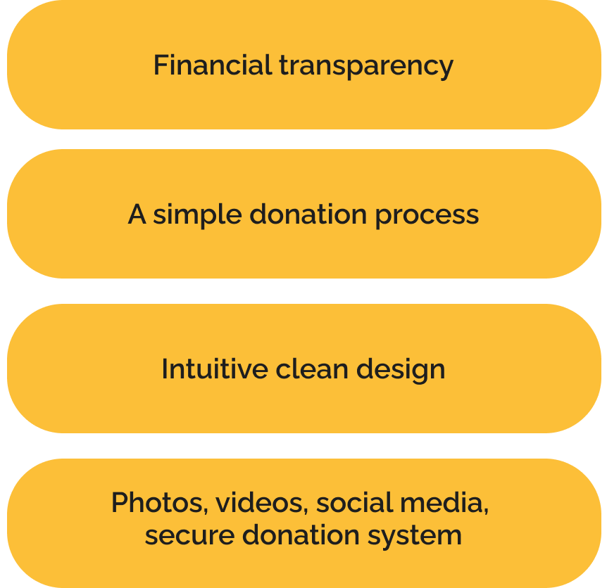

User Interviews & Surverys
Initiated research with 4 user interviews and a survey to understanding the process, goals, motivations and pain-points of users when exploring non-profit websites. The following insights stood out:
A Non-profit Web Redesign.
Problem
website does not exhibit trustworthiness due to a dated design and lack of transparency; this is resulting in donor skepticism and fewer donations.


Role

UX & UI Researcher
UX & UI Designer
Time Span
3 Weeks
Team
Asraa Khan
Asma Tasawar
Lianet Hernandes
Scotty Graham
Skills
Website Audit
Research
Problem Identification
Solution Ideation
Wireframing
Responsive Web
Design
Prototyping
“Child hunger is a massive problem too big for a single person or country to fix.”
World Vision Canada


User Interviews & Surverys
Initiated research with 4 user interviews and a survey to understanding the process, goals, motivations and pain-points of users when exploring non-profit websites. The following insights stood out:


Stakeholder Interview
Stakeholder Interview was conducted to get a better understanding of the organization’s goals, expectations and frustrations from their current website. The following insights stood out:
Shirley
Kids Against Hunger Canada
Marketing & Communications Volunteer (15 hrs/wk)
“We want to reduce friction on a donation.”
“One of our challenges is that we don’t lack in volunteers, but the food costs money and we need donors.”
“I think the mission statement is the core message we want to convey through the website.”
Website Audit
Upon perusing the current website its design, layout and user flow flaws came to our attention


Competitor Analysis
So, how do non-profit organizations encourage donors to contribute? Through an analysis of competitors, we narrowed it down to three key elements:
Engaging & Inclusive Design
Diverse Giving Options
Impactful Storytelling

User Persona
The research helped create and understand the the ideal user’s needs and expectations from the website.
“I need a user-friendly donation platform that’s transparent, secure, and shows me
exactly where my money is going.
That’s how I know my donation is truly making a difference.”
Sarrah Watson
Toronto, Canada
Frustrations vs. Expectations
Concluded the research with a better understanding of our target users’ expectations and frustrations for the not for profit organization’s website.
Frustrations
Expectations
Problem Statement
We have observed that their website does not exhibit trustworthiness due to a dated design and lack of transparency; this is resulting in donor skepticism and fewer donations.
How Might We
How might we increase contributions by improving transparency in the donation process and demonstrating the reputation and impact of KAHC?
Redesign Goals
1. Simplify the donation process for increased contributions.
2. Emphasize the significance and credibility of the cause.
3. Showcase the organization's authenticity and demonstrate its impact.
Storyboard
User story / Scenario:
User wants to donate to a trustworthy organization that fights food insecurity and is also interested in local volunteer opportunities.
User Flow
Aimed at reducing friction in the donation process by making the journey shorter, and less complicated; and by creating several routes to reach the donation form.
Style Guide
The style guide prioritized the use of striking imagery and vibrant colors. This was achieved by blending subdued images with vivid backgrounds to ensure the visuals commanded attention.
Constraint: Could not manipulate the logo too much as the organization was affiliated to a larger parent organization and consistency had to be maintained.